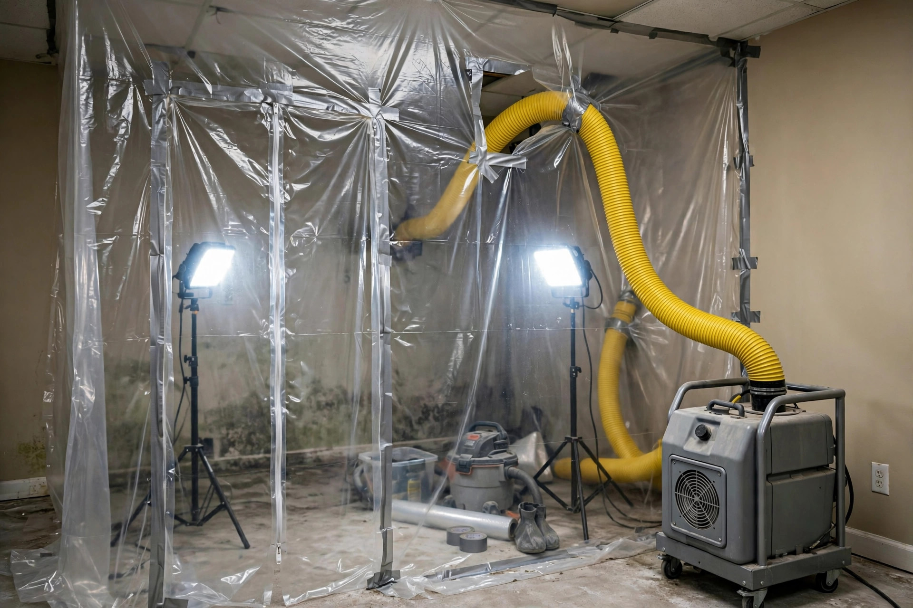

Home / Mold / Remediation
Boise, Idaho · IICRC S520 approachMold remediation that actually solves it
Containment, HEPA filtration, careful removal, and drying — sequenced so the mold leaves and doesn't come back next season.
The remediation sequence
Every job follows the same disciplined order. Skipping steps is how mold returns.
Contain the area
Poly sheeting and negative air pressure isolate the work zone so spores don't travel through the house while we work.
Filter the air
HEPA air scrubbers run continuously, pulling airborne particles out of the contained space.
Remove the growth
Colonized porous materials come out; hard surfaces get HEPA-vacuumed and damp-wiped. No fogging as a substitute for removal.
Dry and verify
Moisture readings must hit dry standard before rebuild. Then a final visual and wipe-down check.
Why Boise homes need remediation (not just bleach)
Bleach kills surface mold on hard materials but doesn't remove it from porous ones — and it does nothing about the moisture that caused it. Professional remediation removes the growth and corrects the conditions, which is why it lasts.
Plaster walls hide it
East End homes with original plaster can harbor mold behind the surface for years. Bleach on the surface never reaches the cavity where it's feeding.
New York Canal humidity
Homes near the New York Canal see seasonal humidity spikes. Surface cleaning without addressing the moisture cycle means regrowth by fall.
Sub-20°F pipe bursts
When Boise drops below 20°F, supply lines in exterior walls can burst. The resulting soak, if not dried in days, becomes a remediation job.
Spread through ducts
Once mold reaches the air handler or ductwork, every cycle distributes spores. Remediation includes the system, not just the room.
What remediation typically involves
Every job is different, but most fall into these ranges:
| Scope | What's included |
|---|---|
| Small area (under 10 sq ft) | Containment, HEPA vacuum, antimicrobial wipe, moisture check |
| Room-scale (10–100 sq ft) | Full containment, air scrubbers, selective drywall removal, drying |
| Multi-room or HVAC | Whole-zone containment, duct cleaning coordination, clearance verification |
Final scope depends on moisture mapping. We quote after inspection, never before seeing it.
An East End laundry room wall
Picture a 1960s East End ranch where the laundry room shares a wall with the garage. The homeowner notices a dark line creeping up behind the washer. Moisture readings show the wall has been wet for weeks from a slow washing-machine supply hose drip. Remediation means containing the laundry area, removing the lower two feet of drywall, HEPA-vacuuming the studs, drying to standard, and replacing the hoses with braided steel lines. The IICRC S520 standard guides each step — see IICRC S520 for the industry reference. Health context: CDC — Mold.
Remediation questions
How do I know if I need remediation or just a cleanup?
The EPA suggests that mold covering more than about 10 square feet, mold inside HVAC systems, or mold after sewage or floodwater usually calls for professional remediation with containment. Smaller surface patches on hard materials can often be handled with proper cleaning.
Will remediation require tearing out my drywall?
Only where the material can't be cleaned. Non-porous surfaces get HEPA-vacuumed and wiped; porous materials like drywall and insulation that are colonized get removed. We cut only what the moisture mapping says is affected.
Is the house safe to stay in during remediation?
Containment with negative air pressure keeps the work area isolated. Most families stay in the home while we work on one area. We'll tell you upfront if the scope means you should plan to be elsewhere for a day.
How do you verify the mold is actually gone?
We do a visual check, moisture readings back to dry standard, and HEPA vacuuming of the area. For larger jobs we recommend independent post-remediation verification sampling — a separate set of eyes on the result.
Does homeowners insurance cover mold remediation?
It depends on the cause. Sudden water events (burst pipe) are often covered; long-term seepage or maintenance issues usually aren't. We document everything so you have what your adjuster needs.
Talk through your situation
Describe what you're seeing — smell, stains, a recent leak — and we'll tell you honestly whether it sounds like a remediation job or something simpler. No charge for the conversation.